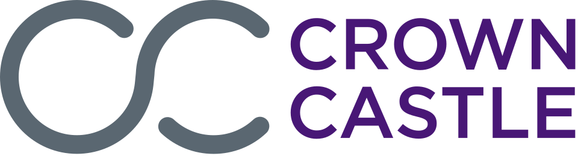

Crown Castle International Corp.
Crown Castle International Corp.는 미국에서 공유 통신 인프라를 제공하는 부동산투자신탁이다. 휴스턴에 본사를 두고 미국 전역의 셀 타워를 소유·운영·임대한다.
최종 업데이트

Crown Castle International Corp.는 어떤 브랜드인가
이 회사는 미국의 도시와 지역사회에 무선 연결 기반을 제공하는 공유 통신 인프라 사업자이다. 미국 전역에서 약 40,000개의 셀 타워를 소유하고 운영하며 임대한다.
전국 단위 자산 포트폴리오는 데이터, 기술, 무선 서비스에 접근하도록 하는 기반이다. 2015년에는 소형 셀 기술로 영역을 넓혔고, Quanta Fiber Networks 인수로 여러 대도시권의 10,000마일이 넘는 광섬유망을 확보했다.
같은 해 호주 자산을 매각한 뒤 사업 범위를 미국으로 한정했으며, 2017년 Lightower 인수 계약으로 광섬유망을 약 60,000 route miles로 확대했다.
Crown Castle International Corp.는 어떻게 시작되고 성장했나
Castle Tower는 1994년 휴스턴 일대의 타워 133개로 출발했고, 처음에는 민간 투자회사 두 곳의 지원을 받았다. 초기 운영 자산 인수 가운데 하나는 BBC의 송신 시설이었으며, TDF Group과 함께 NTL Incorporated보다 높은 가격을 제시했다.
별도로 Robert Crown과 Barbara Crown이 1980년 설립한 Crown Communications는 미국 전역에서 셀 타워를 건설하고 입지를 선정하며 소유·유지했다. 두 회사는 1997년 합병했고, 1998년 1월 완료된 합병으로 통합 회사의 자산은 두 배 이상 증가했다.
Crown Castle International Corp.의 브랜드 아이덴티티는 무엇인가
미국 전역의 약 40,000개 셀 타워를 공유 인프라로 운영하고, 소형 셀과 광섬유망까지 연결 기반을 확장한 점이 구분점이다.
Crown Castle International Corp.의 대표 제품과 서비스는 무엇인가
핵심 사업은 셀 타워의 소유·운영·임대이며, 통신사가 공유해 쓰는 무선 인프라를 제공한다. NextG Networks 인수 계약 당시 대상 자산에는 가동 중인 분산 안테나 시스템 노드 7,000개 이상, 건설 중인 노드 1,500개, 4,600마일이 넘는 광섬유 케이블 권리가 포함됐다.
T-Mobile US와는 7,200개 무선 타워에 관한 28년 임대 계약을, AT&T Mobility와는 9,700개 무선 타워에 관한 28년 임대 계약을 체결했다. 소형 셀 기술과 광섬유망도 사업 축이며, 24/7 Mid-Atlantic Network, Quanta Fiber Networks, Lightower 인수를 통해 관련 기반을 확대했다.
Crown Castle International Corp.는 지금 어떤 상태인가
이 회사는 휴스턴에 본사를 둔 부동산투자신탁이며 미국 내 공유 통신 인프라에 집중한다. 2015년 호주 자산의 마지막 타워를 Macquarie Group에 매각해 국제 사업 비중을 없애고 미국 전용 운영사로 전환했다.
현재 미국 전역에서 약 40,000개의 셀 타워를 소유·운영·임대한다.
Crown Castle International Corp. 로고는 어떻게 변해왔나
자주 묻는 질문
Crown Castle International Corp.는 어느 나라 브랜드인가요?
Crown Castle International Corp.는 미국의 금융 브랜드입니다.
Crown Castle International Corp.는 언제 설립되었나요?
Crown Castle International Corp.는 1994년 설립되었습니다.
Crown Castle International Corp.의 브랜드 아이덴티티는 무엇인가요?
미국 전역의 약 40,000개 셀 타워를 공유 인프라로 운영하고, 소형 셀과 광섬유망까지 연결 기반을 확장한 점이 구분점이다.
Crown Castle International Corp.의 대표 제품은 무엇인가요?
핵심 사업은 셀 타워의 소유·운영·임대이며, 통신사가 공유해 쓰는 무선 인프라를 제공한다.
Crown Castle International Corp.는 현재 어떤 상태인가요?
이 회사는 휴스턴에 본사를 둔 부동산투자신탁이며 미국 내 공유 통신 인프라에 집중한다.
Crown Castle International Corp.의 본사는 어디에 있나요?
Crown Castle International Corp.의 본사는 휴스턴에 있습니다(위키데이터 기준).
Crown Castle International Corp.의 공식 웹사이트는 어디인가요?
Crown Castle International Corp.의 공식 웹사이트는 https://www.crowncastle.com/ 입니다.
출처와 검증
Crown Castle International Corp. 관련 참고: 공식 웹사이트 · 위키데이터 Q5189320 · 영어 위키백과. 브랜드명은 한글과 원어를 함께 표기하되 데이터에 없는 표기는 만들지 않습니다. 기원 국가·설립연도는 검수된 정의문에서 확인된 값을 우선하고, 없을 때만 공식 웹사이트 URL이 일치하는 위키데이터 개체의 값을 씁니다. 위키데이터 값은 2026-09-12 기준입니다.